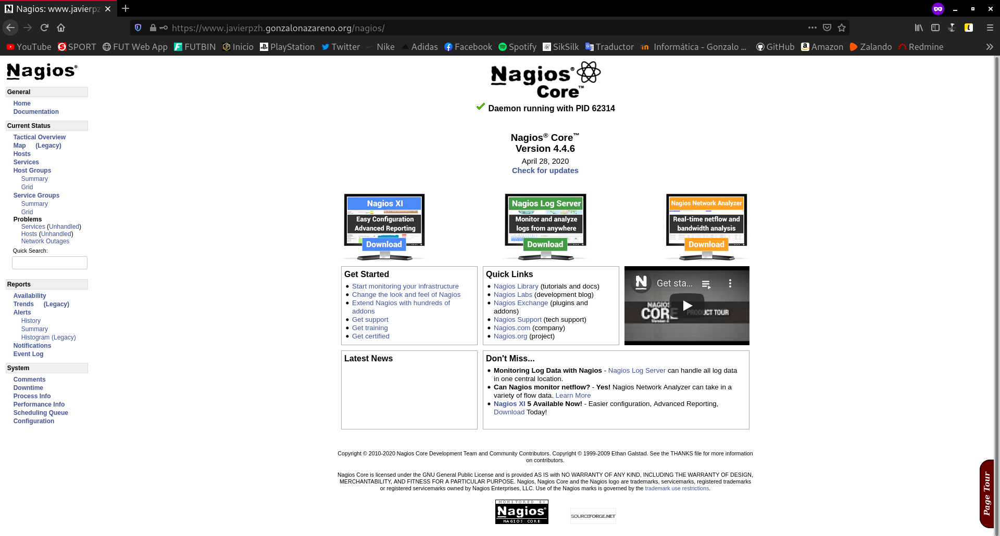

Nagios es un sistema de monitorización de redes ampliamente utilizado, que vigila los equipos y los servicios que se especifiquen, alertando cuando el comportamiento de los mismos no sea el deseado.
Cuenta con una extensa, sólida y organizada comunidad de soporte que ofrece de modo gratuito addons y plugins para extender sus funcionalidades a través de Nagios Exchange, información de fondo y ayuda a través de Nagios Community e información técnica a través de Nagios Wiki.
Características principales
-
Monitorización de servicios de red como: SMTP, POP3, HTTP, SNMP, ...
-
Monitorización de los recursos del sistema hardware como: carga de CPU, uso de los discos, RAM, estado de los puertos, ...
-
Independencia de sistemas operativos
-
Posibilidad de monitorización remota mediante túneles SSL cifrados o SSH
-
Posibilidad de programar plugins específicos para nuevos sistemas
-
Chequeo de servicios paralizados
-
Notificaciones cuando ocurren problemas en servicios o hosts, así como cuando son resueltos
-
Posibilidad de definir manejadores de eventos que se ejecuten al ocurrir un evento de un servicio o host (acciones pro-activas)
-
Soporte para implementar hosts de monitores redundantes
-
Visualización del estado de la red en tiempo real a través de su interfaz web, con la posibilidad de generar informes y gráficas de comportamiento de los sistemas monitorizados, y visualización del listado de notificaciones enviadas, historial de problemas, archivos de registros, ...
Las alertas que genera pueden ser recibidas por correo electrónico y mensajes SMS, entre otros.
Así luce el panel web de Nagios:

Instalación del servidor
En primer lugar, me gustaría aclarar un poco cuál va a ser el entorno de trabajo, y es que el escenario sobre el que vamos a trabajar, ha sido construido en diferentes posts previamente elaborados. Los dejo ordenados a continuación por si te interesa:
- Creación del escenario de trabajo en OpenStack
- Modificación del escenario de trabajo en OpenStack
- Servidores OpenStack: DNS, Web y Base de Datos
He hecho más tareas sobre este escenario, las puedes encontrar todas aquí.
Explicado esto, vamos a proceder con la instalación de nuestro sistema de monitorización.
En mi caso, voy a llevar a cabo la instalación de Nagios Core en la máquina Quijote, es decir, que ésta será el servidor principal. Hay que recordar que Quijote consta de un sistemas CentOS 8.
He decidido escoger como servidor este equipo principalmente porque Nagios necesita un servidor web para poder acceder a su panel de administración web, y esto es algo que me interesa ya que, es en esta máquina donde se encuentra instalado el servidor web de mi escenario. No queda solo ahí, ya que nuestro servidor web, en mi caso, Apache, tiene que ser capaz de ejecutar código PHP. Si no dispones de estos requisitos, puedes visitar el tercer artículo indexado anteriormente, donde llevo a cabo la instalación de estos requisitos.
Hecha la introducción, es el momento de empezar con la propia instalación en sí.
Para descargar Nagios Core tenemos dos opciones, o bien descargar los paquetes desde los repositorios oficiales, o, como prefiero hacer en mi caso, ya que con los paquetes oficiales he tenido problemas, nos dirigimos a su sitio web y descargamos directamente el archivo .tar.gz. A día de hoy, la versión más reciente disponible es la 2.3.3, la dejo aquí.
Pero antes de ello, debemos descargar los plugins de Nagios. Esto es algo que se debe hacer tanto en la máquina servidor como en cada cliente que queramos supervisar.
Para descargar estos plugins, nos dirigimos a su sitio web y descargamos directamente el archivo .tar.gz. A día de hoy, la versión más reciente disponible es la 2.3.3, la dejo aquí.
Una vez descargado y descomprimido el archivo, antes de llevar a cabo la instalación, debemos instalar algunos paquetes y dependencias que nos harán falta durante todo el proceso de instalación.
dnf install bind-utils libpq-devel gcc make unzip -y
Accedemos a la carpeta resultante de la descompresión y pasamos a configurar la compilación:
./configure
Compilamos los plugins:
make
Finalizada la compilación, instalamos los plugins:
make install
Una vez instalados los plugins de Nagios, quedan instalados como comandos ejecutables en la ruta /usr/local/nagios/libexec/, y pueden ser utilizados directamente desde consola.
Una vez instalados los plugins es el momento de instalar Nagios Core. Para ello, descomprimimos el archivo descargado anteriormente, accedemos al directorio resultante y configuramos su compilación:
./configure
Y procedemos con el proceso de compilación:
make all
Llegó la hora de la instalación, que consta de varios pasos, aunque lo resumiremos en el siguiente comando:
make install-groups-users install install-webconf install-config install-init install-daemoninit install-commandmode
Para concluir y poder acceder a nuestro panel web, vamos a crear el usuario nagiosadmin:
htpasswd -c /usr/local/nagios/etc/htpasswd.users nagiosadmin
Terminada la instalación, iniciaremos su servicio y lo habilitaremos en cada arranque:
systemctl start nagios && systemctl enable nagios
Listo. Ahora podremos acceder al panel web de Nagios, por tanto, si nos dirigimos a nuestra dirección web /nagios, según esté configurado en nuestro servidor web, en mi caso www.javierpzh.gonzalonazareno.org/nagios nos aparecerá esta ventana:

Si introducimos el usuario y la contraseña que hemos creado anteriormente:

Vemos como podemos acceder al panel de administración de Nagios. Si accedemos al apartado Hosts:

Vemos que actualmente nos muestra nuestro equipo local. Si accedemos al apartado Services:

Vemos que actualmente nos muestra los servicios de nuestro equipo local, por lo que habríamos finalizado la instalación de Nagios Core en nuestro sistema.
Instalación en los clientes
Ya tenemos instalado Nagios Core en el servidor y ya estamos monitorizando los servicios que se encuentran en él, pero además de los servicios de esa máquina, queremos monitorizar los servicios de las máquinas Dulcinea, Sancho, Freston y nuestra VPS, la máquina de OVH.
Para ello debemos llevar a cabo la instalación de Nagios NRPE. Descargaremos Nagios NRPE tanto en la parte del servidor, como en los clientes, ya que ambos lo necesitan. En la parte del cliente el propio paquete Nagios NRPE, y en el servidor el plugin NRPE para Nagios Core. En mi caso, mostraré tan solo la instalación en Dulcinea, ya que en las demás máquinas el proceso es idéntico.
La descarga, al igual que antes, la podremos llevar a cabo desde su sitio web, o desde repositorios.
apt install nagios-nrpe-server nagios-plugins-basic nagios-plugins -y
Terminada la instalación de Nagios NRPE, iniciaremos su servicio y lo habilitaremos en cada arranque:
systemctl start nagios-nrpe-server && systemctl enable nagios-nrpe-server
Listo.
Configuración en los clientes
Es el momento de llevar a cabo la configuración en la parte de los clientes.
Para configurar el servicio Nagios NRPE editaremos su archivo de configuración principal, el llamado nrpe.cfg, que se encuentra en la ruta /etc/nagios/nrpe.cfg. En él, buscaremos la directiva allowed_hosts, que indica los servidores Nagios Core que podrán conectarse con el servicio, y añadiremos la dirección IP de nuestro servidor Quijote. De manera que quedaría de la siguiente manera:
En Dulcinea, Sancho y Freston:
allowed_hosts=127.0.0.1,::1,10.0.2.6
En la máquina de OVH:
allowed_hosts=127.0.0.1,::1,172.22.200.183
Regla DNAT:
También debemos buscar la siguiente línea, y habilitar los permisos para que el servidor Nagios Core pueda obtener los datos necesarios. Para ello, debemos asegurarnos que el valor de la directiva dont_blame_nrpe sea 1, es decir, esté habilitado:
dont_blame_nrpe=1
Por último, este archivo contiene también varias definiciones de muestra de comandos que pueden ser admitidos en las peticiones desde el servidor Nagios Core, y en una de ellas, se hace referencia a un dispositivo /dev/hda1 que en mi caso, no existe, sino que debería tratarse de /dev/vda1, para las máquinas del cloud, y de /dev/sda1, para la máquina de OVH, así que modificamos el comando check_hda1 de forma adecuada. Por defecto posee este aspecto:
command[check_hda1]=/usr/lib/nagios/plugins/check_disk -w 20% -c 10% -p /dev/hda1
En mi caso, en las máquinas Dulcinea, Sancho y Freston, queda con el siguiente aspecto:
command[check_vda1]=/usr/lib/nagios/plugins/check_disk -w 20% -c 10% -p /dev/vda1
Y en la máquina de OVH, con el siguiente aspecto:
command[check_sda1]=/usr/lib/nagios/plugins/check_disk -w 20% -c 10% -p /dev/sda1
Hechas estas modificaciones, tendremos que reiniciar el servicio para que se apliquen los cambios:
systemctl restart nagios-nrpe-server
Configuración en el servidor del plugin NRPE
Es el momento de instalar el plugin NRPE en nuestro servidor Quijote, por lo que empezaremos descargando el paquete que comentamos anteriormente.
dnf install nagios-plugins-nrpe -y
Una vez terminada la instalación, probamos que nuestro servidor puede comunicarse con los clientes:
[root@quijote ~]# cd /usr/lib64/nagios/plugins # Dulcinea [root@quijote plugins]# ./check_nrpe -H 10.0.2.10 NRPE v3.2.1 # Sancho [root@quijote plugins]# ./check_nrpe -H 10.0.1.8 NRPE v4.0.0 # Freston [root@quijote plugins]# ./check_nrpe -H 10.0.1.6 NRPE v3.2.1 # OVH [root@quijote plugins]# ./check_nrpe -H 51.210.105.17 ^C
(falta ovh)
Podemos observar como la versión de la dirección 10.0.1.8, que corresponde a Sancho, es distinta a las demás versiones. Esto seguramente sea, porque todos los equipos menos Sancho, poseen Debian 10, y Sancho un sistema Ubuntu, por lo que seguramente en Ubuntu, han desarrollado una versión más reciente de este paquete, que aún en Debian no se encuentra.
Para seguir con el proceso de configuración, vamos a añadir una serie de líneas en el fichero commands.cfg, que se encuentra en la ruta /etc/nagios/objects/commands.cfg. Añadimos el siguiente bloque al final del fichero, para definir el comando para el plugin NRPE:
define command {
command_name check_nrpe
command_line $USER1$/check_nrpe -H $HOSTADDRESS$ -c $ARG1$
}
Hecho esto, nos toca configurar el fichero nagios.cfg, que se encuentra en la ruta /etc/nagios/nagios.cfg, para que incluya las de configuraciones de los clientes. Para hacer esto, debemos buscar la siguiente línea y descomentarla, ya que inicialmente se encuentra comentada:
cfg_dir=/etc/nagios/servers
El subdirectorio servers/ que acabamos de habilitar en la configuración no existe, así que lo creamos antes de continuar:
mkdir /etc/nagios/servers
Dentro de éste, crearemos un archivo de configuración en el que definiremos a cada cliente que deseemos monitorizar, en mi caso creo el siguiente fichero:
nano /etc/nagios/servers/config.cfg
En este fichero de configuración, vamos a definir al respectivo cliente y posteriormente, los servicios que queremos supervisar, obviamente el cliente nos lo debe permitir en su configuración.
El contenido de este fichero será el siguiente:
# HOSTS
# Dulcinea
define host {
use linux-server
host_name dulcinea
alias Dulcinea
address 10.0.2.10
}
# Sancho
define host {
use linux-server
host_name sancho
alias Sancho
address 10.0.1.8
}
# Freston
define host {
use linux-server
host_name freston
alias Freston
address 10.0.1.6
}
# OVH
define host {
use linux-server
host_name ovh
alias OVH
address 51.210.105.17
}
# SERVICIOS
Por último, como nuestro servidor Nagios Core se encuentra en un sistema CentOS, recordaremos que nos encontramos con su firewall por defecto. Por tanto, tendremos que añadir una regla para que el servidor Nagios Core pueda conectar al servicio Nagios NRPE:
firewall-cmd --permanent --add-service=nrpe
Recargamos la configuración del firewall para aplicar los cambios:
firewall-cmd --reload
Para terminar, reiniciamos el servidor Nagios Core:
systemctl restart nagios
Si nos dirigimos a nuestro panel web, en la sección Hosts, ahora además de Quijote, nos aparecen los nuevos clientes:

.